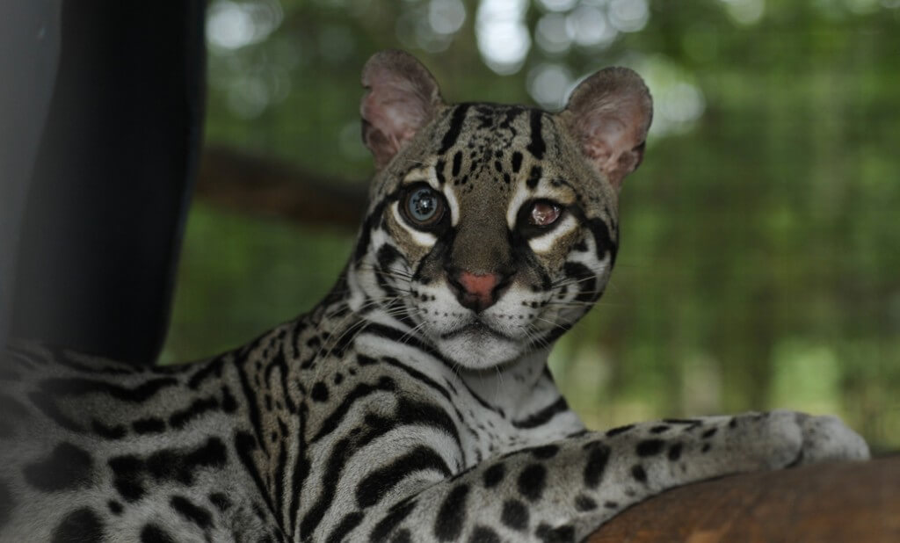

Lapas

Rescatadas en abril, hoy vuelan libres bajo cuidado.
Un refugio seguro para aquellos que no tienen voz.
Nos dedicamos al rescate, rehabilitación y reubicación de animales en situación de calle o abandono. Trabajamos bajo un modelo ético y sostenible, asegurando que cada vida reciba la dignidad que merece.
Fundados en la pasión por la vida silvestre, nuestro equipo multidisciplinario combina años de experiencia veterinaria con un compromiso inquebrantable por la conservación de la fauna local.
Rescatadas en abril, hoy vuelan libres bajo cuidado.

Un habitante tranquilo que requiere mucha paciencia y cuidado.

Más de 50 animales rescatados y rehabilitados este año con éxito.
Tours guiados: 8:00, 9:30, 11:00 am y 1:30 pm.
Tours privados: 10:00 am y 1:30 pm (Reserva previa).
Visita autoguiada: 8:00am-12:00md / 1:00pm-3:30pm.
Aranjuez: (506) 8644-4666
Monteverde: (506) 8814-6000
Direcciones: Aranjuez y Monteverde de Puntarenas.
Suscríbete para ofertas exclusivas.